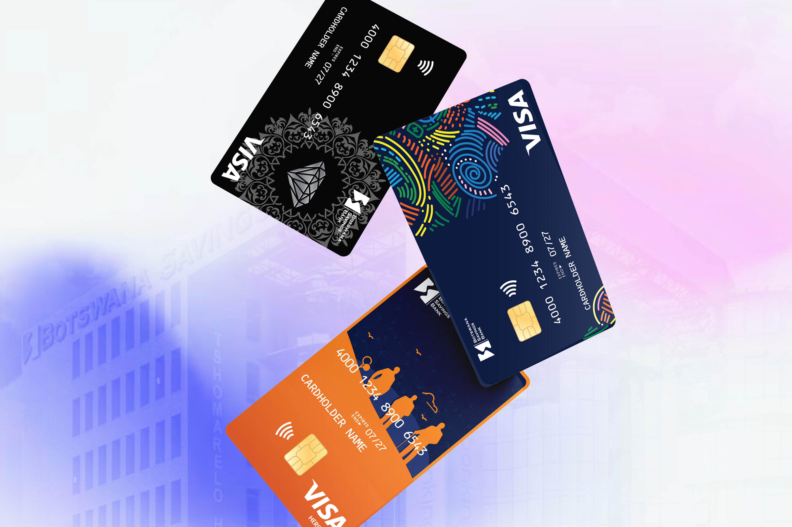

Botswana Savings Bank (BSB) - Brand and visual identity work for a tiered banking product line — three customer segments, one family.

BSB needed visual identity for a three-tier debit card range. Each tier served a different customer segment, but the cards had to read as part of one brand family. The challenge wasn't choosing colours — it was choosing how much should change, and how much should stay constant.
Cards live in wallets, on counters, and in customers' hands daily. The design had to read at a glance, hold up over time, and survive whatever printing and finishing the manufacturing partners could deliver.
I started with the family — the shared structural grid, brand cues, and typography that would identify any card in the range as a BSB card. Once that foundation was solid, I designed each tier within those constraints.
The differentiation came from colour, graphics, finish, and small hierarchy moves. Each design tier was based on the taste for all users, this wans't just a design project - UX was weaved into entire process. Specifications went to manufacturing partners with full production guidance.